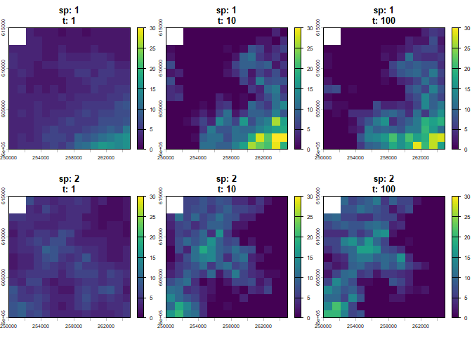

The mrangr package is designed to simulate metacommunities within a spatially explicit, mechanistic framework. It extends the functionality of the rangr package by allowing for the simulation of multiple interacting species via an asymmetric interaction matrix.
This tool mimics the essential processes shaping metacommunity dynamics: local population growth, dispersal, and interspecific interactions. Simulations take place in dynamic environments, facilitating projections of community shifts in response to environmental changes.
Installation
You can install mrangr with:
devtools::install()or using the “Install” button in “Build” tab in RStudio.
Basic Workflow
The mrangr workflow involves initialising a community with spatial data and interaction parameters, running the simulation, and analysing the results.
1. Input Maps and Interactions
You must provide carrying capacity maps (K_map) and initial abundance maps (n1_map) as SpatRaster objects. For a community of species, the rasters must contain layers.
# Load example maps
K_map <- rast(system.file("input_maps/K_map_eg.tif", package = "mrangr"))
K_map <- subset(K_map, 1:2)Interspecific interactions are defined using an interaction matrix (), where values represent the per-capita interaction strength of the species in the column on the species in the row.
2. Community Initialisation
Use initialise_com() to create a sim_com_data object. This stores all parameters, including the intrinsic growth rate () and the dispersal rate.
first_com <- initialise_com(
n1_map = round(K_map / 2),
K_map = K_map,
r = 1.1,
a = a,
rate = 1 / 500
)3. Running the Simulation
The sim_com() function executes the simulation over a specified number of time steps.
first_sim <- sim_com(first_com, time = 100)4. Visualisation
You can visualise the final spatial distributions or the change in mean abundance over time.

# Plot abundance time series for all species
plot_series(first_sim)
Virtual Ecologist
The package includes a virtual_ecologist() function to simulate real-world observation processes. This allows users to sample the simulated community at defined points in space and time, incorporating sampling effort and detection probability into the simulation.